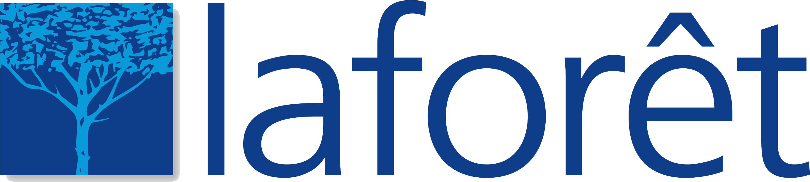
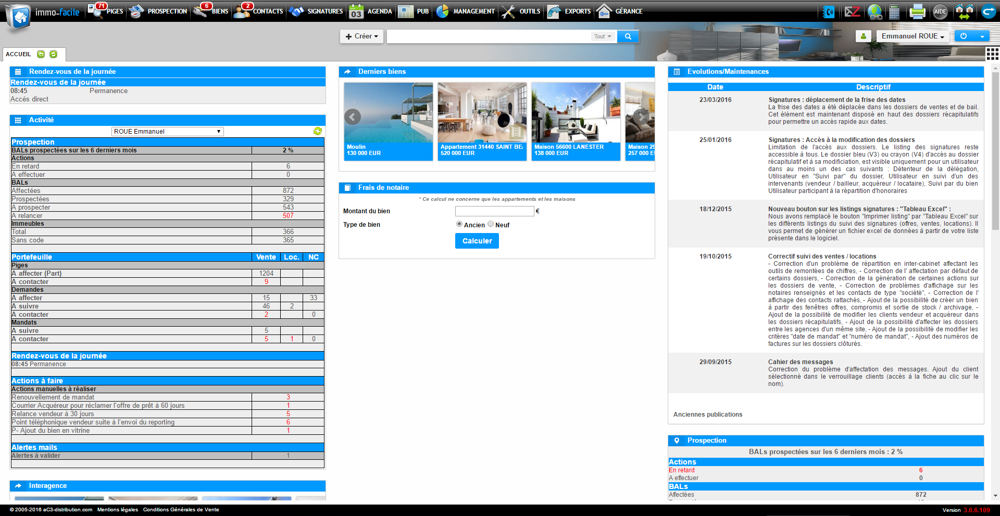
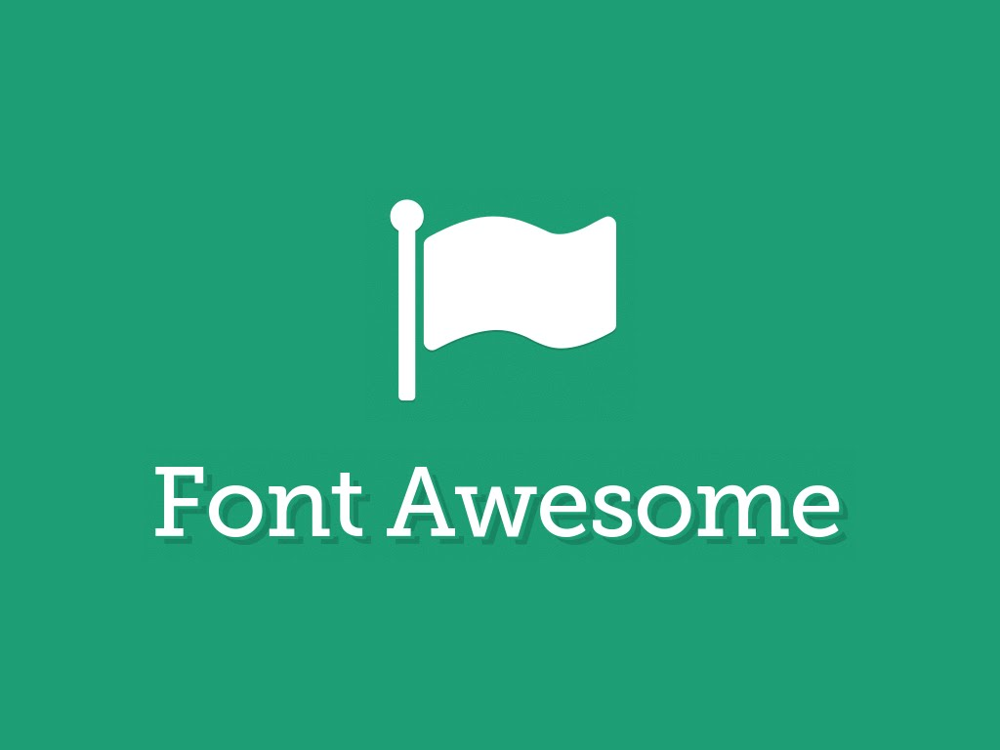
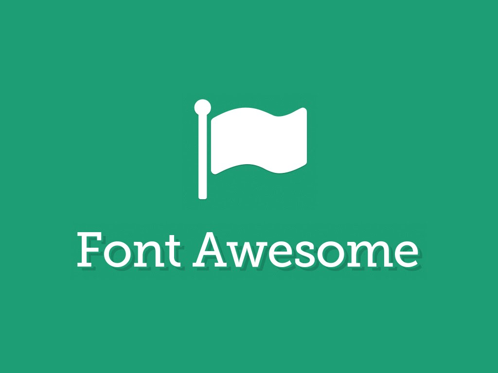

Soutenance
Refonte Ergonomique
Qui suis-je ?
Evan Guélard
evanguelard.fr / @EvanGuelardSommaire
1 Mise en contexte
2 Réalisation du projet
Mise en contexte
L'entreprise, le logiciel, le projet10 ans
Zone Prap Pip à Guipavas
77 collaborateurs
Mais Immo Facile c'est quoi ?
Le logiciel Immo facile
CRM (Customers Relationship Manager)FULL WEB
Et concrètement,
A quoi sert le logiciel ?
Nos clients

Agences indépendantes
Le projet
L'existant, le besoin, les objectifsL'existant
Le besoin
Demandes de clients boosté par les appels d'offres
Les objectifs
Améliorer le visuel de l'interface
Simplifier l'utilisation du logiciel
Optimiser la structure du code
Réalisation du Projet
Préparation, Production, LivraisonPréparation du projet
Synthèse des besoins
- Cahier des charges
- Chiffrage
- Deadline
- Recrutement
Charte graphique
Choix des technologies
PHP - mySQL - jQuery - osCommerce

 

Synthèse des besoins
Charte graphique
Choix des technologies
Production du projet
Le début de la V4Intégration & développement
Paperboard, TrelloRecette graphique
Graphiste